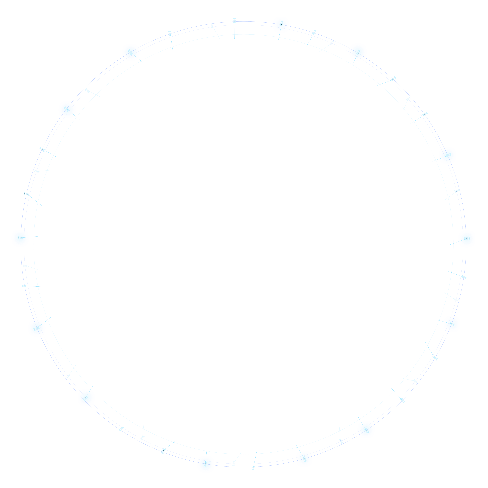

뉴 스페이스 시대
우주
우주
인터넷 서비스
지구 저궤도(LEO) 상공에 수백~수천 기의 통신위성을 배치하여, 글로벌 인터넷 서비스 공급은 물론 고속으로 이동하는 항공기·선박·기차·차량 등에도 24시간 광대역 통신이 가능한 초공간 통신 인프라를 제공합니다.
스페이스 허브는 우주 인터넷 해외 시장 선도업체인 OneWeb의 글로벌 파트너로서 한국 및 아시아 지역에 위성통신서비스 공급을 목표로 OneWeb과 상업 계약을 추진 중에 있습니다.